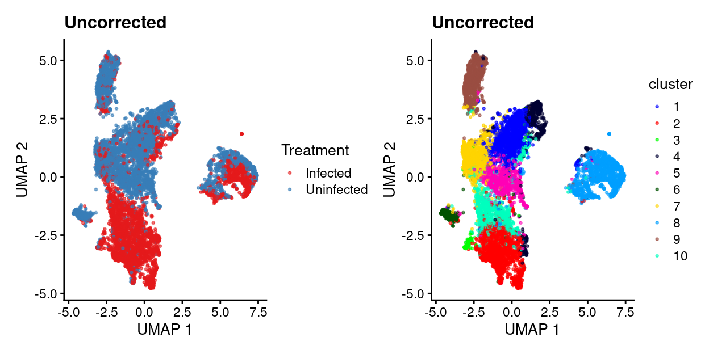
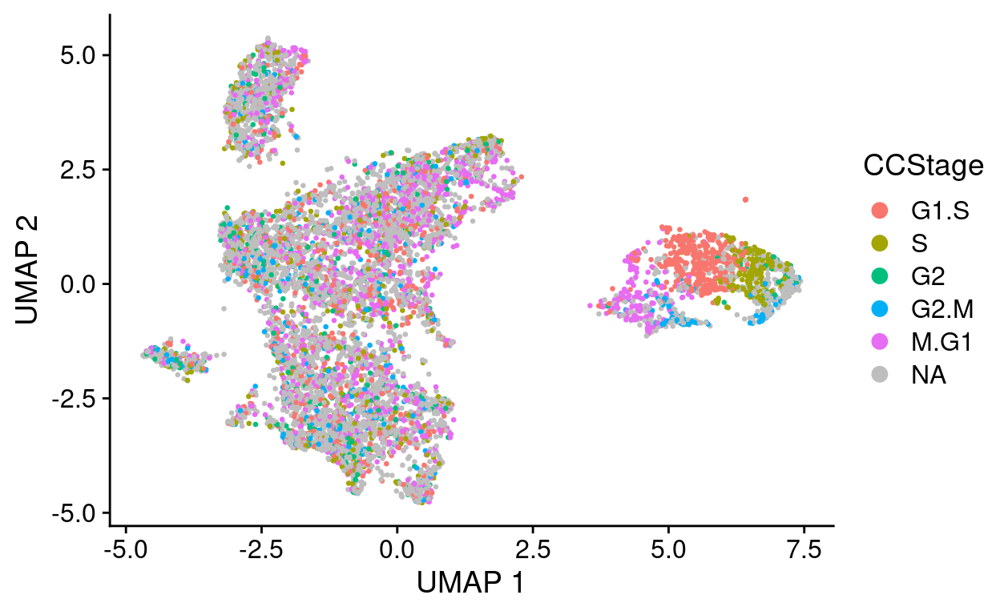
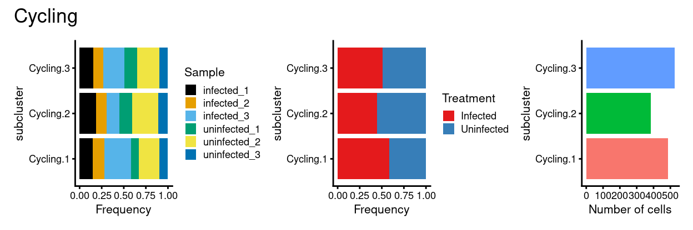

Setup
Show code
library(SingleCellExperiment)
library(here)
library(cowplot)
library(patchwork)
sce <- readRDS(here("data/SCEs/C057_Cooney.cells_selected.SCE.rds"))
# data frames containing co-ordinates and factors for creating reduced
# dimensionality plots.
umap_df <- cbind(
data.frame(
x = reducedDim(sce, "UMAP")[, 1],
y = reducedDim(sce, "UMAP")[, 2]),
as.data.frame(colData(sce)[, !colnames(colData(sce)) %in% c("TRA", "TRB")]))
# Some useful colours
sample_colours <- setNames(
unique(sce$sample_colours),
unique(names(sce$sample_colours)))
treatment_colours <- setNames(
unique(sce$treatment_colours),
unique(names(sce$treatment_colours)))
cluster_colours <- setNames(
unique(sce$cluster_colours),
unique(names(sce$cluster_colours)))
# Some useful gene sets
mito_set <- rownames(sce)[which(rowData(sce)$CHR == "MT")]
ribo_set <- grep("^RP(S|L)", rownames(sce), value = TRUE)
# NOTE: A more curated approach for identifying ribosomal protein genes
# (https://github.com/Bioconductor/OrchestratingSingleCellAnalysis-base/blob/ae201bf26e3e4fa82d9165d8abf4f4dc4b8e5a68/feature-selection.Rmd#L376-L380)
library(msigdbr)
c2_sets <- msigdbr(species = "Homo sapiens", category = "C2")
ribo_set <- union(
ribo_set,
c2_sets[c2_sets$gs_name == "KEGG_RIBOSOME", ]$human_gene_symbol)
Re-processing
This is a no-op if the same hvg set is used from cell selection.
Show code
library(scran)
set.seed(1000)
var_fit <- modelGeneVarByPoisson(sce, block = sce$batch)
hvg <- getTopHVGs(var_fit, var.threshold = 0)
is_mito <- hvg %in% mito_set
is_ribo <- hvg %in% ribo_set
hvg <- hvg[!(is_mito | is_ribo)]
set.seed(1010)
var_fit.sample <- modelGeneVarByPoisson(sce, block = sce$Sample)
hvg.sample <- getTopHVGs(var_fit.sample, var.threshold = 0)
is_mito <- hvg.sample %in% mito_set
is_ribo <- hvg.sample %in% ribo_set
hvg.sample <- hvg.sample[!(is_mito | is_ribo)]
library(scater)
# NOTE:
set.seed(11235)
sce <- denoisePCA(sce, var_fit, subset.row = hvg)
set.seed(8875)
sce <- runUMAP(sce, dimred = "PCA")
umap_df <- cbind(
data.frame(
x = reducedDim(sce, "UMAP")[, 1],
y = reducedDim(sce, "UMAP")[, 2]),
as.data.frame(colData(sce)[, !colnames(colData(sce)) %in% c("TRA", "TRB")]))
set.seed(8111)
snn_gr <- buildSNNGraph(sce, use.dimred = "PCA")
clusters <- igraph::cluster_louvain(snn_gr)
sce$cluster <- factor(clusters$membership)
umap_df$cluster <- sce$cluster
cluster_colours <- setNames(
Polychrome::glasbey.colors(nlevels(sce$cluster) + 1)[-1],
levels(sce$cluster))
sce$cluster_colours <- cluster_colours[sce$cluster]
Diagnosing batch effects
- Samples were collected in a single capture, but there are some strong differences between Venetoclax and Control samples.
- Explore whether batch effect exists and how it might be corrected.
Show code
table(cluster = sce$cluster, treatment = sce$Treatment)
treatment
cluster Infected Uninfected
1 141 1248
2 1651 66
3 86 18
4 173 379
5 37 816
6 13 291
7 133 856
8 724 671
9 71 840
10 827 90Show code
uncorrected.p1 <- plotUMAP(sce, colour_by = "Treatment", point_size = 0.5) +
scale_colour_manual(values = treatment_colours, name = "Treatment") +
ggtitle("Uncorrected")
uncorrected.p2 <- plotUMAP(sce, colour_by = "cluster", point_size = 0.5) +
scale_colour_manual(values = cluster_colours, name = "cluster") +
ggtitle("Uncorrected")
uncorrected.p1 + uncorrected.p2

Show code
p1 <- ggplot(as.data.frame(colData(sce)[, c("cluster", "Sample")])) +
geom_bar(
aes(x = cluster, fill = Sample),
position = position_fill(reverse = TRUE)) +
coord_flip() +
ylab("Frequency") +
scale_fill_manual(values = sample_colours) +
theme_cowplot(font_size = 8)
p2 <- ggplot(as.data.frame(colData(sce)[, c("cluster", "Treatment")])) +
geom_bar(
aes(x = cluster, fill = Treatment),
position = position_fill(reverse = TRUE)) +
coord_flip() +
ylab("Frequency") +
scale_fill_manual(values = treatment_colours) +
theme_cowplot(font_size = 8)
p3 <- ggplot(as.data.frame(colData(sce)[, "cluster", drop = FALSE])) +
geom_bar(aes(x = cluster, fill = cluster)) +
coord_flip() +
ylab("Number of cells") +
scale_fill_manual(values = cluster_colours) +
theme_cowplot(font_size = 8) +
guides(fill = FALSE)
p1 + p2 + p3
Linear regression with rescaleBatches()
Show code
library(batchelor)
rescaled <- rescaleBatches(sce, batch = sce$Treatment)
library(scran)
set.seed(666)
rescaled <- denoisePCA(
rescaled,
var_fit,
subset.row = hvg,
assay.type = "corrected")
snn.gr <- buildSNNGraph(rescaled, use.dimred="PCA")
clusters.resc <- igraph::cluster_louvain(snn.gr)$membership
rescaled <- runUMAP(rescaled, dimred="PCA")
rescaled$batch <- factor(rescaled$batch)
rescaled$cluster <- factor(clusters.resc)
table(cluster=clusters.resc, treatment=rescaled$batch)
treatment
cluster Infected Uninfected
1 98 30
2 942 264
3 868 1004
4 12 223
5 189 450
6 76 735
7 687 672
8 89 295
9 579 1264
10 316 338Show code
p1 <- ggplot(as.data.frame(
cbind(
colData(sce)[, "Sample", drop = FALSE],
colData(rescaled)[, "cluster", drop = FALSE]))) +
geom_bar(
aes(x = cluster, fill = Sample),
position = position_fill(reverse = TRUE)) +
coord_flip() +
ylab("Frequency") +
scale_fill_manual(values = sample_colours) +
theme_cowplot(font_size = 8)
p2 <- ggplot(as.data.frame(
cbind(
colData(sce)[, "Treatment", drop = FALSE],
colData(rescaled)[, "cluster", drop = FALSE]))) +
geom_bar(
aes(x = cluster, fill = Treatment),
position = position_fill(reverse = TRUE)) +
coord_flip() +
ylab("Frequency") +
scale_fill_manual(values = treatment_colours) +
theme_cowplot(font_size = 8)
p3 <- ggplot(as.data.frame(colData(rescaled)[, "cluster", drop = FALSE])) +
geom_bar(aes(x = cluster, fill = cluster)) +
coord_flip() +
ylab("Number of cells") +
theme_cowplot(font_size = 8) +
guides(fill = FALSE)
p1 + p2 + p3
Linear regression with regressBatches()
Show code
set.seed(10001)
residuals <- regressBatches(sce, batch = sce$Treatment, d = 50,
subset.row=hvg, correct.all=TRUE)
snn.gr <- buildSNNGraph(residuals, use.dimred="corrected")
clusters.resid <- igraph::cluster_louvain(snn.gr)$membership
table(Cluster=clusters.resid, treatment=residuals$batch)
treatment
Cluster Infected Uninfected
1 519 1168
2 19 254
3 191 380
4 92 817
5 195 814
6 249 7
7 1031 223
8 740 884
9 91 28
10 729 700Show code
residuals <- runUMAP(residuals, dimred="corrected")
residuals$batch <- factor(residuals$batch)
residuals$cluster <- factor(clusters.resid)
residuals.p1 <- plotUMAP(residuals, colour_by = "batch", point_size = 0.5) +
scale_colour_manual(values = treatment_colours, name = "Treatment") +
ggtitle("Residuals")
residuals.p2 <- plotUMAP(residuals, colour_by = "cluster", point_size = 0.5) +
ggtitle("Residuals")
residuals.p1 + residuals.p2
Show code
p1 <- ggplot(as.data.frame(
cbind(
colData(sce)[, "Sample", drop = FALSE],
colData(residuals)[, "cluster", drop = FALSE]))) +
geom_bar(
aes(x = cluster, fill = Sample),
position = position_fill(reverse = TRUE)) +
coord_flip() +
ylab("Frequency") +
scale_fill_manual(values = sample_colours) +
theme_cowplot(font_size = 8)
p2 <- ggplot(as.data.frame(
cbind(
colData(sce)[, "Treatment", drop = FALSE],
colData(residuals)[, "cluster", drop = FALSE]))) +
geom_bar(
aes(x = cluster, fill = Treatment),
position = position_fill(reverse = TRUE)) +
coord_flip() +
ylab("Frequency") +
scale_fill_manual(values = treatment_colours) +
theme_cowplot(font_size = 8)
p3 <- ggplot(as.data.frame(colData(residuals)[, "cluster", drop = FALSE])) +
geom_bar(aes(x = cluster, fill = cluster)) +
coord_flip() +
ylab("Number of cells") +
theme_cowplot(font_size = 8) +
guides(fill = FALSE)
p1 + p2 + p3
MNN by treatment
Show code
set.seed(1000101001)
mnn_treatment.out <- fastMNN(
sce,
batch = sce$Treatment,
d = 50,
k = 20,
subset.row = hvg)
snn.gr <- buildSNNGraph(mnn_treatment.out, use.dimred="corrected")
clusters.mnn_treatment <- igraph::cluster_louvain(snn.gr)$membership
table(Cluster=clusters.mnn_treatment, treatment=mnn_treatment.out$batch)
treatment
Cluster Infected Uninfected
1 341 1245
2 270 308
3 327 802
4 110 336
5 239 4
6 710 679
7 67 28
8 521 572
9 1179 577
10 92 724Show code
mnn_treatment.out <- runUMAP(mnn_treatment.out, dimred="corrected")
mnn_treatment.out$batch <- factor(mnn_treatment.out$batch)
mnn_treatment.out$cluster <- factor(clusters.mnn_treatment)
mnn_treatment.p1 <- plotUMAP(
mnn_treatment.out,
colour_by = "batch",
point_size = 0.5) +
scale_colour_manual(values = treatment_colours, name = "Treatment") +
ggtitle("MNN (treatment)")
mnn_treatment.p2 <- plotUMAP(
mnn_treatment.out,
colour_by = "cluster",
point_size = 0.5) +
ggtitle("MNN (treatment)")
mnn_treatment.p1 + mnn_treatment.p2
Show code
metadata(mnn_treatment.out)$merge.info$lost.var
Infected Uninfected
[1,] 0.02292624 0.0100355Show code
p1 <- ggplot(as.data.frame(
cbind(
colData(sce)[, "Sample", drop = FALSE],
colData(mnn_treatment.out)[, "cluster", drop = FALSE]))) +
geom_bar(
aes(x = cluster, fill = Sample),
position = position_fill(reverse = TRUE)) +
coord_flip() +
ylab("Frequency") +
scale_fill_manual(values = sample_colours) +
theme_cowplot(font_size = 8)
p2 <- ggplot(as.data.frame(
cbind(
colData(sce)[, "Treatment", drop = FALSE],
colData(mnn_treatment.out)[, "cluster", drop = FALSE]))) +
geom_bar(
aes(x = cluster, fill = Treatment),
position = position_fill(reverse = TRUE)) +
coord_flip() +
ylab("Frequency") +
scale_fill_manual(values = treatment_colours) +
theme_cowplot(font_size = 8)
p3 <- ggplot(
as.data.frame(colData(mnn_treatment.out)[, "cluster", drop = FALSE])) +
geom_bar(aes(x = cluster, fill = cluster)) +
coord_flip() +
ylab("Number of cells") +
theme_cowplot(font_size = 8) +
guides(fill = FALSE)
p1 + p2 + p3
MNN by sample
Show code
set.seed(1000101001)
mnn_sample.out <- fastMNN(
sce,
batch = sce$Sample,
d = 50,
k = 20,
subset.row = hvg.sample)
snn.gr <- buildSNNGraph(mnn_sample.out, use.dimred="corrected")
clusters.mnn_sample <- igraph::cluster_louvain(snn.gr)$membership
table(Cluster = clusters.mnn_sample, treatment = mnn_sample.out$batch)
treatment
Cluster infected_1 infected_2 infected_3 uninfected_1 uninfected_2
1 205 366 383 202 254
2 281 260 182 378 406
3 208 164 327 181 348
4 60 16 9 280 226
5 193 166 207 116 299
6 169 132 171 242 132
7 231 71 55 390 387
treatment
Cluster uninfected_3
1 98
2 359
3 140
4 196
5 93
6 132
7 416Show code
mnn_sample.out <- runUMAP(mnn_sample.out, dimred="corrected")
mnn_sample.out$batch <- factor(mnn_sample.out$batch)
mnn_sample.out$cluster <- factor(clusters.mnn_sample)
mnn_sample.p1 <- plotUMAP(
mnn_sample.out,
colour_by = I(sce$Treatment),
point_size = 0.5) +
scale_colour_manual(values = treatment_colours, name = "Treatment") +
ggtitle("MNN (sample)")
mnn_sample.p2 <- plotUMAP(
mnn_sample.out,
colour_by = "cluster",
point_size = 0.5) +
ggtitle("MNN (sample)")
mnn_sample.p3 <- plotUMAP(
mnn_sample.out,
colour_by = "batch",
point_size = 0.5) +
scale_colour_manual(values = sample_colours, name = "sample") +
ggtitle("MNN (sample)")
mnn_sample.p1 + mnn_sample.p2 + mnn_sample.p3 + plot_layout(ncol = 2)
Show code
round(metadata(mnn_sample.out)$merge.info$lost.var, 3)
infected_1 infected_2 infected_3 uninfected_1 uninfected_2
[1,] 0.021 0.034 0.000 0.000 0.000
[2,] 0.003 0.003 0.032 0.000 0.000
[3,] 0.016 0.012 0.010 0.029 0.000
[4,] 0.002 0.002 0.002 0.003 0.038
[5,] 0.002 0.002 0.002 0.003 0.003
uninfected_3
[1,] 0.000
[2,] 0.000
[3,] 0.000
[4,] 0.000
[5,] 0.044Show code
p1 <- ggplot(as.data.frame(
cbind(
colData(sce)[, "Sample", drop = FALSE],
colData(mnn_sample.out)[, "cluster", drop = FALSE]))) +
geom_bar(
aes(x = cluster, fill = Sample),
position = position_fill(reverse = TRUE)) +
coord_flip() +
ylab("Frequency") +
scale_fill_manual(values = sample_colours) +
theme_cowplot(font_size = 8)
p2 <- ggplot(as.data.frame(
cbind(
colData(sce)[, "Treatment", drop = FALSE],
colData(mnn_sample.out)[, "cluster", drop = FALSE]))) +
geom_bar(
aes(x = cluster, fill = Treatment),
position = position_fill(reverse = TRUE)) +
coord_flip() +
ylab("Frequency") +
scale_fill_manual(values = treatment_colours) +
theme_cowplot(font_size = 8)
p3 <- ggplot(
as.data.frame(colData(mnn_sample.out)[, "cluster", drop = FALSE])) +
geom_bar(aes(x = cluster, fill = cluster)) +
coord_flip() +
ylab("Number of cells") +
theme_cowplot(font_size = 8) +
guides(fill = FALSE)
p1 + p2 + p3 + plot_layout(ncol = 3)
Summary of data integration results
Show code
uncorrected.p1 + rescaled.p1 + residuals.p1 + mnn_treatment.p1 +
mnn_sample.p1 + plot_layout(ncol = 2, guides = "collect")
Show code
uncorrected.p2 + rescaled.p2 + residuals.p2 + mnn_treatment.p2 +
mnn_sample.p2 + plot_layout(ncol = 2)
- Uncorrected data has strong treatment-specific differences (and presumably donor-specific differences).
- Correcting for treatment using any of the 4 approaches removes / dampens those treatment-specific differences.
- However, its a little hard to interpret if this is a good or bad thing.
- Therefore, will just use uncorrected data in what follows while remembering that this means there will be very treatment-specific (and perhaps donor-specific) clusters.
Clustering at different resolutions
- In all clusterings we observe an out group on the right hand side.
Show code
set.seed(126)
snn_gr <- buildSNNGraph(sce, use.dimred = "PCA", k = 20)
clusters <- igraph::cluster_louvain(snn_gr)
sce$cluster_k20 <- factor(clusters$membership)
snn_gr <- buildSNNGraph(sce, use.dimred = "PCA", k = 50)
clusters <- igraph::cluster_louvain(snn_gr)
sce$cluster_k50 <- factor(clusters$membership)
snn_gr <- buildSNNGraph(sce, use.dimred = "PCA", k = 100)
clusters <- igraph::cluster_louvain(snn_gr)
sce$cluster_k100 <- factor(clusters$membership)
p1 <- plotUMAP(
sce,
colour_by = "cluster",
point_size = 0.5,
point_alpha = 1,
text_by = "cluster") +
scale_colour_manual(values = cluster_colours, name = "cluster") +
ggtitle("Uncorrected: k = 10") +
guides(colour = FALSE)
p2 <- plotUMAP(
sce,
colour_by = "cluster_k20",
point_size = 0.5,
point_alpha = 1,
text_by = "cluster_k20") +
ggtitle("Uncorrected: k = 20") +
guides(colour = FALSE)
p3 <- plotUMAP(
sce,
colour_by = "cluster_k50",
point_size = 0.5,
point_alpha = 1,
text_by = "cluster_k50") +
ggtitle("Uncorrected: k = 50") +
guides(colour = FALSE)
p4 <- plotUMAP(
sce,
colour_by = "cluster_k100",
point_size = 0.5,
point_alpha = 1,
text_by = "cluster_k100") +
ggtitle("Uncorrected: k = 100") +
guides(colour = FALSE)
p1 + p2 + p3 + p4 + plot_layout(ncol = 2)
Some clusters are readily annotated by uniquely upregulated markers
Show code
# NOTE: Not blocking on `Sample` because some clusters are so `Sample`- and
# `Treatment`-specific.
out <- pairwiseTTests(
sce,
sce$cluster,
direction = "up",
lfc = 0.5)
top_markers <- getTopMarkers(
out$statistics,
out$pairs,
pairwise = FALSE,
pval.type = "all")
features <- unlist(top_markers)
sce$libsize <- log10(sce$sum)
plotHeatmap(
sce,
features,
order_columns_by = c("cluster", "libsize"),
cluster_rows = FALSE,
color = hcl.colors(101, "Blue-Red 3"),
center = TRUE,
zlim = c(-3, 3),
column_annotation_colors = list(
cluster = cluster_colours),
annotation_row = data.frame(
cluster = names(features),
row.names = features),
main = "Uniquely upregulated (logFC > 0.5) cluster marker genes")
Cell cycle / proliferation of activated T-cells
Show code
cycling_subset <- "8"
- There appears to be a cycling and non-cycling subset of clusters driving the initial clustering (cluster 8)
- Cycling subset typified by upregulation of a large number of genes, larger library sizes, and cyclin expression
- Cell cycle could really be proliferation of T-cells upon activation
Show code
sce$cycling_subset <- ifelse(
sce$cluster %in% cycling_subset,
"Cycling",
"Not cycling")
p1 <- plotUMAP(
sce,
colour_by = "cluster",
text_by = "cluster",
point_size = 0.5,
point_alpha = 1) +
scale_colour_manual(values = cluster_colours) +
guides(colour = FALSE)
p2 <- plotUMAP(
sce,
colour_by = "cycling_subset",
text_by = "cluster",
point_size = 0.5,
point_alpha = 1)
p1 + p2
Show code
p1 <- ggplot(as.data.frame(colData(sce)[, c("cycling_subset", "Sample")])) +
geom_bar(
aes(x = cycling_subset, fill = Sample),
position = position_fill(reverse = TRUE)) +
coord_flip() +
ylab("Frequency") +
scale_fill_manual(values = sample_colours) +
theme_cowplot(font_size = 8)
p2 <- ggplot(as.data.frame(colData(sce)[, c("cycling_subset", "Treatment")])) +
geom_bar(
aes(x = cycling_subset, fill = Treatment),
position = position_fill(reverse = TRUE)) +
coord_flip() +
ylab("Frequency") +
scale_fill_manual(values = treatment_colours) +
theme_cowplot(font_size = 8)
p3 <- ggplot(as.data.frame(colData(sce)[, "cycling_subset", drop = FALSE])) +
geom_bar(aes(x = cycling_subset, fill = cycling_subset)) +
coord_flip() +
ylab("Number of cells") +
theme_cowplot(font_size = 8) +
guides(fill = FALSE)
p1 + p2 + p3
Gene ontology analysis of cycling subset markers
Show code
markers <- findMarkers(
sce,
sce$cluster,
direction = "up",
block = sce$Sample,
lfc = 0.5,
pval.type = "all")
cluster_8_markers <- markers[[cycling_subset]][
markers[[cycling_subset]]$FDR < 0.05, ]
features <- rownames(cluster_8_markers)
unlist(features)
[1] "STMN1" "MKI67" "TYMS" "HMGB2" "TUBA1B"
[6] "PTTG1" "HIST1H4C" "TUBB" "HMGN2" "H2AFZ"
[11] "TOP2A" "NUSAP1" "UBE2C" "BIRC5" "CDKN3"
[16] "CCNA2" "TUBB4B" "H2AFX" "MCM7" "CENPF"
[21] "ZWINT" "CDC20" "CCNB2" "SMC2" "KIFC1"
[26] "ASPM" "HMGB1" "CKS1B" "CDK1" "CENPW"
[31] "H2AFV" "TPX2" "KIF22" "LMNB1" "CLSPN"
[36] "DUT" "PCNA" "CKS2" "SMC4" "ASF1B"
[41] "RAN" "TUBA1C" "FEN1" "CCNB1" "CENPM"
[46] "HIST1H1B" "PLK1" "CENPU" "COX8A" "DHFR"
[51] "DLGAP5" "DEK" "PHF19" "SLC25A5" "TK1"
[56] "RPA3" "NUCKS1" "LSM4" "MAD2L1" "RRM1"
[61] "PPIA" "NUDT1" "LSM5" "GTSE1" "HMGB3"
[66] "DDX39A" "UBE2T" "ANP32E" "CDCA8" "KPNA2"
[71] "DTYMK" "GAPDH" "CENPE" "HNRNPA2B1" "SRSF2" Cycling subset has larger library sizes
Show code
p3 <- plotColData(
sce,
"sum",
x = "cluster",
colour_by = "cycling_subset",
point_size = 0.5,
point_alpha = 1)
(p1 + p2) / p3 + plot_layout(guides = "collect")
Expression of cycling subset markers and cyclins
Show code
cycling_subset_markers <- findMarkers(
sce,
sce$cycling_subset,
direction = "up",
block = sce$Sample,
lfc = 0.5)
cyclin_genes <- grep("^CCN[ABDE][0-9]$", rowData(sce)$Symbol)
cyclin_genes <- sort(rownames(sce)[cyclin_genes])
features <- unlist(
List(
cycling_markers = head(
rownames(cycling_subset_markers[["Not cycling"]]),
25),
not_cycling_markers = head(
rownames(cycling_subset_markers[["Cycling"]]),
25),
cyclins = cyclin_genes))
plotHeatmap(
sce,
features,
order_columns_by = c("cycling_subset", "cluster", "libsize"),
cluster_rows = FALSE,
color = hcl.colors(101, "Blue-Red 3"),
center = TRUE,
zlim = c(-3, 3),
column_annotation_colors = list(cluster = cluster_colours),
annotation_row = data.frame(
GeneSet = names(features),
row.names = features))

Using the cyclone() classifier
- Unsure how much I trust these results given the classifier was trained on quite a different dataset
Show code
# NOTE: This was run and the results saved.
# hs.pairs <- readRDS(system.file("exdata", "human_cycle_markers.rds",
# package="scran"))
#
# # Using Ensembl IDs to match up with the annotation in 'hs.pairs'.
# set.seed(100)
# assignments <- cyclone(
# sce,
# hs.pairs,
# gene.names = rowData(sce)$ENSEMBL.GENEID)
assignments <- readRDS(here("data", "cyclone_assignments.rds"))
colData(sce) <- cbind(colData(sce), DataFrame(assignments$score))
sce$phases <- assignments$phases
Show code
par(mfrow = c(2, 2))
boxplot(
sce$G1 ~ sce$cluster,
ylab = "score",
col = cluster_colours,
xlab = "cluster",
main = "Cyclone: G1")
boxplot(
sce$G2M ~ sce$cluster,
ylab = "score",
col = cluster_colours,
xlab = "cluster",
main = "Cyclone: G2M")
boxplot(
sce$S ~ sce$cluster,
ylab = "score",
col = cluster_colours,
xlab = "cluster",
main = "Cyclone: S")

Show code
proportions(table(sce$cluster, assignments$phases), 1)
G1 G2M S
1 0.738660907 0.002159827 0.259179266
2 0.659289458 0.006988934 0.333721607
3 0.163461538 0.057692308 0.778846154
4 0.757246377 0.001811594 0.240942029
5 0.726846424 0.003516999 0.269636577
6 0.700657895 0.006578947 0.292763158
7 0.647118301 0.001011122 0.351870576
8 0.478136201 0.313978495 0.207885305
9 0.698133919 0.006586169 0.295279912
10 0.721919302 0.005452563 0.272628135Show code
proportions(table(sce$cycling_subset, sce$phases), 1)
G1 G2M S
Cycling 0.478136201 0.313978495 0.207885305
Not cycling 0.693381593 0.005041365 0.301577042Show code
p1 <- plotUMAP(
sce,
colour_by = "G1",
text_by = "cluster",
point_size = 0.5,
point_alpha = 1)
p2 <- plotUMAP(
sce,
colour_by = "G2M",
text_by = "cluster",
point_size = 0.5,
point_alpha = 1)
p3 <- plotUMAP(
sce,
colour_by = "S",
text_by = "cluster",
point_size = 0.5,
point_alpha = 1)
p4 <- plotUMAP(
sce,
colour_by = "cluster",
text_by = "cluster",
point_size = 0.5,
point_alpha = 1) +
scale_colour_manual(values = cluster_colours, name = "cluster")
p1 + p2 + p3 + p4 + plot_layout(ncol = 2)

Subset analysis based on cycling_subset
- Using a fairly coarse clustering (
k = 50)
Show code
set.seed(9391)
list_of_sce <- quickSubCluster(
sce,
groups = sce$cycling_subset,
prepFUN = function(x) {
var_fit <- modelGeneVarByPoisson(x)
hvg <- getTopHVGs(var_fit, var.threshold = 0)
is_mito <- hvg %in% mito_set
is_ribo <- hvg %in% ribo_set
hvg <- hvg[!(is_mito | is_ribo)]
# NOTE: Keep the original dimensionality reduction around for downstream
# plotting.
reducedDimNames(x) <- paste0("original_", reducedDimNames(x))
denoisePCA(x, var_fit, subset.row = hvg)
},
clusterFUN = function(x) {
snn_gr <- buildSNNGraph(x, use.dimred = "PCA", k = 50)
factor(igraph::cluster_louvain(snn_gr)$membership)
})
# It's also useful to have per-sample UMAP representations.
set.seed(17127)
list_of_sce <- lapply(list_of_sce, runUMAP, dimred = "PCA")
Show code
# It's also useful to have SingleR DICE with fine labels for subclusters
library(SingleR)
library(celldex)
ref <- DatabaseImmuneCellExpressionData()
labels_fine <- ref$label.fine
# NOTE: This code doesn't necessarily generalise beyond the DICE main labels.
label_fine_collapsed_colours <- setNames(
c(
Polychrome::glasbey.colors(nlevels(factor(labels_fine)) + 1)[-1],
"orange"),
c(levels(factor(labels_fine)), "other"))
list_of_sce <- lapply(list_of_sce, function(x) {
pred_subcluster_fine <- SingleR(
test = x,
ref = ref,
labels = labels_fine,
clusters = x$subcluster)
x$label_subcluster_fine <- factor(
pred_subcluster_fine[x$subcluster, "pruned.labels"])
x
})
list_of_sce <- lapply(list_of_sce, function(x) {
pred_cell_fine <- SingleR(
test = x,
ref = ref,
labels = labels_fine)
x$label_cell_fine <- factor(pred_cell_fine$pruned.labels)
x
})
Show code
wrap_plots(
lapply(names(list_of_sce), function(n) {
x <- list_of_sce[[n]]
plotUMAP(x, colour_by = "subcluster", point_size = 0.5, point_alpha = 1) +
ggtitle(n)
}))

Show code
wrap_plots(
lapply(names(list_of_sce), function(n) {
x <- list_of_sce[[n]]
plotUMAP(
x,
colour_by = "label_subcluster_fine",
text_by = "subcluster",
point_size = 0.5,
point_alpha = 1) +
ggtitle(n)
})) +
plot_layout(guides = "collect")

Show code
wrap_plots(
lapply(names(list_of_sce), function(n) {
x <- list_of_sce[[n]]
plotUMAP(
x,
colour_by = "label_cell_fine",
text_by = "subcluster",
point_size = 0.5,
point_alpha = 1) +
ggtitle(n)
})) +
plot_layout(guides = "collect")

Cycling subset analysis
Cyclingsubset subclusters are strongly enriched forphasesCyclingsubset subclusters have strong marker genes (but these probably reflect more cell cycle and less cell type)Cyclingsubset subclusters dont appear to beTreatment-specific
Show code
cycling_sce <- list_of_sce[["Cycling"]]
Show code
wrap_plots(
plotlist = c(
lapply(c("G1", "G2M", "S"), function(phase) {
plotUMAP(
cycling_sce,
colour_by = phase,
text_by = "subcluster",
point_size = 0.5,
point_alpha = 1)
}),
list(
ggplot(
as.data.frame(
colData(cycling_sce)[, c("subcluster", "phases")])) +
geom_bar(
aes(x = subcluster, fill = phases),
position = position_fill(reverse = TRUE)) +
coord_flip() +
ylab("Frequency") +
theme_cowplot(font_size = 8)))) +
plot_annotation(title = "Cycling cluster")

Show code
out <- pairwiseTTests(
cycling_sce,
cycling_sce$subcluster,
direction = "up",
block = cycling_sce$Sample)
top_markers <- getTopMarkers(
out$statistics,
out$pairs,
pairwise = FALSE,
pval.type = "all",
n = 10)
features <- unlist(top_markers)
markers <- findMarkers(
cycling_sce,
cycling_sce$subcluster,
direction = "up",
pval.type = "all",
block = cycling_sce$Sample)
plotHeatmap(
cycling_sce,
features,
order_columns_by = c("subcluster", "Treatment", "Sample"),
cluster_rows = FALSE,
color = hcl.colors(101, "Blue-Red 3"),
center = TRUE,
zlim = c(-3, 3),
column_annotation_colors = list(
Treatment = treatment_colours,
Sample = sample_colours),
annotation_row = data.frame(
subcluster = names(features),
row.names = features),
main = "Cycling: Uniquely upregulated cluster marker genes")
Show code
p1 <- ggplot(as.data.frame(colData(cycling_sce)[, c("subcluster", "Sample")])) +
geom_bar(
aes(x = subcluster, fill = Sample),
position = position_fill(reverse = TRUE)) +
coord_flip() +
ylab("Frequency") +
scale_fill_manual(values = sample_colours) +
theme_cowplot(font_size = 8)
p2 <- ggplot(as.data.frame(colData(cycling_sce)[, c("subcluster", "Treatment")])) +
geom_bar(
aes(x = subcluster, fill = Treatment),
position = position_fill(reverse = TRUE)) +
coord_flip() +
ylab("Frequency") +
scale_fill_manual(values = treatment_colours) +
theme_cowplot(font_size = 8)
p3 <- ggplot(as.data.frame(colData(cycling_sce)[, "subcluster", drop = FALSE])) +
geom_bar(aes(x = subcluster, fill = subcluster)) +
coord_flip() +
ylab("Number of cells") +
theme_cowplot(font_size = 8) +
guides(fill = FALSE)
p1 + p2 + p3 + plot_annotation(title = "Cycling")
Show code
p1 <- plotUMAP(
cycling_sce,
colour_by = "subcluster",
text_by = "subcluster",
point_size = 0.5,
point_alpha = 1)
p2 <- plotUMAP(
cycling_sce,
colour_by = "Treatment",
text_by = "subcluster",
point_size = 0.5,
point_alpha = 1) +
scale_colour_manual(values = treatment_colours, name = "Treatment")
p1 + p2 + plot_annotation("Cycling subset")

Not cycling subset analysis
Not cyclingsubset subclusters have little association withphases(orG1,G2M, orS)Not cyclingsubset subclusters have strong marker genes (likely reflecting cell type / state)Not cyclingsubset subclusters appear to be highlyTreatment-specific
Show code
not_cycling_sce <- list_of_sce[["Not cycling"]]
Show code
wrap_plots(
plotlist = c(
lapply(c("G1", "G2M", "S"), function(phase) {
plotUMAP(
not_cycling_sce,
colour_by = phase,
text_by = "subcluster",
point_size = 0.5,
point_alpha = 1)
}),
list(
ggplot(
as.data.frame(
colData(not_cycling_sce)[, c("subcluster", "phases")])) +
geom_bar(
aes(x = subcluster, fill = phases),
position = position_fill(reverse = TRUE)) +
coord_flip() +
ylab("Frequency") +
theme_cowplot(font_size = 8)))) +
plot_annotation(title = "Cycling cluster")
Show code
out <- pairwiseTTests(
not_cycling_sce,
not_cycling_sce$subcluster,
direction = "up",
block = not_cycling_sce$Sample)
top_markers <- getTopMarkers(
out$statistics,
out$pairs,
pairwise = FALSE,
pval.type = "all",
n = 10)
features <- unlist(top_markers)
markers <- findMarkers(
not_cycling_sce,
not_cycling_sce$subcluster,
direction = "up",
pval.type = "all",
block = not_cycling_sce$Sample)
plotHeatmap(
not_cycling_sce,
features,
order_columns_by = c("subcluster", "Treatment", "Sample"),
cluster_rows = FALSE,
color = hcl.colors(101, "Blue-Red 3"),
center = TRUE,
zlim = c(-3, 3),
column_annotation_colors = list(
Treatment = treatment_colours,
Sample = sample_colours),
annotation_row = data.frame(
subcluster = names(features),
row.names = features),
main = "Cycling: Uniquely upregulated cluster marker genes")
Show code
p1 <- ggplot(
as.data.frame(colData(not_cycling_sce)[, c("subcluster", "Sample")])) +
geom_bar(
aes(x = subcluster, fill = Sample),
position = position_fill(reverse = TRUE)) +
coord_flip() +
ylab("Frequency") +
scale_fill_manual(values = sample_colours) +
theme_cowplot(font_size = 8)
p2 <- ggplot(
as.data.frame(colData(not_cycling_sce)[, c("subcluster", "Treatment")])) +
geom_bar(
aes(x = subcluster, fill = Treatment),
position = position_fill(reverse = TRUE)) +
coord_flip() +
ylab("Frequency") +
scale_fill_manual(values = treatment_colours) +
theme_cowplot(font_size = 8)
p3 <- ggplot(
as.data.frame(colData(not_cycling_sce)[, "subcluster", drop = FALSE])) +
geom_bar(aes(x = subcluster, fill = subcluster)) +
coord_flip() +
ylab("Number of cells") +
theme_cowplot(font_size = 8) +
guides(fill = FALSE)
p1 + p2 + p3 + plot_annotation(title = "Cycling")
Show code
p1 <- plotUMAP(
not_cycling_sce,
colour_by = "subcluster",
text_by = "subcluster",
point_size = 0.5,
point_alpha = 1)
p2 <- plotUMAP(
not_cycling_sce,
colour_by = "Treatment",
text_by = "subcluster",
point_size = 0.5,
point_alpha = 1) +
scale_colour_manual(values = treatment_colours, name = "Treatment")
p1 + p2 + plot_annotation("Cycling subset")

Concluding remarks
Show code
The processed SingleCellExperiment objects are available (see data/SCEs/C057_Cooney.cells_selected.SCE.rds, data/SCEs/C057_Cooney.cycling.annotated.SCE.rds, and data/SCEs/C057_Cooney.not_cycling.annotated.SCE.rds). These will be used in downstream analyses, e.g., differential expression analysis between conditions within each cluster and differential abundance analyses between conditions for each cluster.
Additional information
The following are available on request:
- Full CSV tables of any data presented.
- PDF/PNG files of any static plots.
Session info
Show code
sessioninfo::session_info()
Session info
setting value
version R version 4.0.3 (2020-10-10)
os CentOS Linux 7 (Core)
system x86_64, linux-gnu
ui X11
language (EN)
collate en_US.UTF-8
ctype en_US.UTF-8
tz Australia/Melbourne
date 2021-04-07
Packages
! package * version date lib source
P AnnotationDbi 1.52.0 2020-10-27 [?] Bioconductor
P AnnotationHub 2.22.0 2020-10-27 [?] Bioconductor
P assertthat 0.2.1 2019-03-21 [?] CRAN (R 4.0.0)
P batchelor * 1.6.2 2020-11-26 [?] Bioconductor
P beachmat 2.6.4 2020-12-20 [?] Bioconductor
P beeswarm 0.2.3 2016-04-25 [?] CRAN (R 4.0.0)
P Biobase * 2.50.0 2020-10-27 [?] Bioconductor
BiocFileCache 1.14.0 2020-10-27 [1] Bioconductor
BiocGenerics * 0.36.0 2020-10-27 [1] Bioconductor
P BiocManager 1.30.10 2019-11-16 [?] CRAN (R 4.0.0)
P BiocNeighbors 1.8.2 2020-12-07 [?] Bioconductor
BiocParallel 1.24.1 2020-11-06 [1] Bioconductor
P BiocSingular 1.6.0 2020-10-27 [?] Bioconductor
BiocVersion 3.12.0 2020-04-27 [1] Bioconductor
P bit 4.0.4 2020-08-04 [?] CRAN (R 4.0.0)
P bit64 4.0.5 2020-08-30 [?] CRAN (R 4.0.0)
P bitops 1.0-6 2013-08-17 [?] CRAN (R 4.0.0)
P blob 1.2.1 2020-01-20 [?] CRAN (R 4.0.0)
P bluster 1.0.0 2020-10-27 [?] Bioconductor
P bslib 0.2.4 2021-01-25 [?] CRAN (R 4.0.3)
P cachem 1.0.4 2021-02-13 [?] CRAN (R 4.0.3)
P celldex * 1.0.0 2020-10-29 [?] Bioconductor
P cli 2.3.1 2021-02-23 [?] CRAN (R 4.0.3)
P codetools 0.2-18 2020-11-04 [?] CRAN (R 4.0.3)
P colorspace 2.0-0 2020-11-11 [?] CRAN (R 4.0.3)
P cowplot * 1.1.1 2020-12-30 [?] CRAN (R 4.0.3)
P crayon 1.4.1 2021-02-08 [?] CRAN (R 4.0.3)
P crosstalk 1.1.1 2021-01-12 [?] CRAN (R 4.0.3)
P curl 4.3 2019-12-02 [?] CRAN (R 4.0.0)
P DBI 1.1.1 2021-01-15 [?] CRAN (R 4.0.3)
P dbplyr 2.1.0 2021-02-03 [?] CRAN (R 4.0.3)
P DelayedArray 0.16.2 2021-02-26 [?] Bioconductor
P DelayedMatrixStats 1.12.3 2021-02-03 [?] Bioconductor
P digest 0.6.27 2020-10-24 [?] CRAN (R 4.0.2)
P distill 1.2 2021-01-13 [?] CRAN (R 4.0.3)
P downlit 0.2.1 2020-11-04 [?] CRAN (R 4.0.3)
P dplyr 1.0.4 2021-02-02 [?] CRAN (R 4.0.3)
P dqrng 0.2.1 2019-05-17 [?] CRAN (R 4.0.0)
P DT 0.17 2021-01-06 [?] CRAN (R 4.0.3)
P edgeR 3.32.1 2021-01-14 [?] Bioconductor
P ellipsis 0.3.1 2020-05-15 [?] CRAN (R 4.0.0)
P evaluate 0.14 2019-05-28 [?] CRAN (R 4.0.0)
P ExperimentHub 1.16.0 2020-10-27 [?] Bioconductor
P fansi 0.4.2 2021-01-15 [?] CRAN (R 4.0.3)
P farver 2.1.0 2021-02-28 [?] CRAN (R 4.0.3)
P fastmap 1.1.0 2021-01-25 [?] CRAN (R 4.0.3)
P FNN 1.1.3 2019-02-15 [?] CRAN (R 4.0.0)
P generics 0.1.0 2020-10-31 [?] CRAN (R 4.0.3)
P GenomeInfoDb * 1.26.2 2020-12-08 [?] Bioconductor
GenomeInfoDbData 1.2.4 2021-02-04 [1] Bioconductor
P GenomicRanges * 1.42.0 2020-10-27 [?] Bioconductor
P ggbeeswarm 0.6.0 2017-08-07 [?] CRAN (R 4.0.0)
P ggplot2 * 3.3.3 2020-12-30 [?] CRAN (R 4.0.3)
P glue 1.4.2 2020-08-27 [?] CRAN (R 4.0.0)
P GO.db 3.12.1 2020-11-04 [?] Bioconductor
P gridExtra 2.3 2017-09-09 [?] CRAN (R 4.0.0)
P gtable 0.3.0 2019-03-25 [?] CRAN (R 4.0.0)
P here * 1.0.1 2020-12-13 [?] CRAN (R 4.0.3)
P highr 0.8 2019-03-20 [?] CRAN (R 4.0.0)
P htmltools 0.5.1.1 2021-01-22 [?] CRAN (R 4.0.3)
P htmlwidgets 1.5.3 2020-12-10 [?] CRAN (R 4.0.3)
P httpuv 1.5.5 2021-01-13 [?] CRAN (R 4.0.3)
P httr 1.4.2 2020-07-20 [?] CRAN (R 4.0.0)
P igraph 1.2.6 2020-10-06 [?] CRAN (R 4.0.2)
P interactiveDisplayBase 1.28.0 2020-10-27 [?] Bioconductor
P IRanges * 2.24.1 2020-12-12 [?] Bioconductor
P irlba 2.3.3 2019-02-05 [?] CRAN (R 4.0.0)
P jquerylib 0.1.3 2020-12-17 [?] CRAN (R 4.0.3)
P jsonlite 1.7.2 2020-12-09 [?] CRAN (R 4.0.3)
P knitr 1.31 2021-01-27 [?] CRAN (R 4.0.3)
P labeling 0.4.2 2020-10-20 [?] CRAN (R 4.0.0)
P later 1.1.0.1 2020-06-05 [?] CRAN (R 4.0.0)
P lattice 0.20-41 2020-04-02 [?] CRAN (R 4.0.0)
P lifecycle 1.0.0 2021-02-15 [?] CRAN (R 4.0.3)
limma * 3.46.0 2020-10-27 [1] Bioconductor
P locfit 1.5-9.4 2020-03-25 [?] CRAN (R 4.0.0)
P magrittr 2.0.1 2020-11-17 [?] CRAN (R 4.0.3)
P Matrix 1.3-2 2021-01-06 [?] CRAN (R 4.0.3)
MatrixGenerics * 1.2.1 2021-01-30 [1] Bioconductor
P matrixStats * 0.58.0 2021-01-29 [?] CRAN (R 4.0.3)
P memoise 2.0.0 2021-01-26 [?] CRAN (R 4.0.3)
P mime 0.10 2021-02-13 [?] CRAN (R 4.0.3)
P msigdbr * 7.2.1 2020-10-02 [?] CRAN (R 4.0.2)
P munsell 0.5.0 2018-06-12 [?] CRAN (R 4.0.0)
P org.Hs.eg.db 3.12.0 2020-10-20 [?] Bioconductor
P patchwork * 1.1.1 2020-12-17 [?] CRAN (R 4.0.3)
P pheatmap 1.0.12 2019-01-04 [?] CRAN (R 4.0.0)
P pillar 1.5.0 2021-02-22 [?] CRAN (R 4.0.3)
P pkgconfig 2.0.3 2019-09-22 [?] CRAN (R 4.0.0)
P Polychrome 1.2.6 2020-11-11 [?] CRAN (R 4.0.3)
P promises 1.2.0.1 2021-02-11 [?] CRAN (R 4.0.3)
P purrr 0.3.4 2020-04-17 [?] CRAN (R 4.0.0)
P R6 2.5.0 2020-10-28 [?] CRAN (R 4.0.2)
P rappdirs 0.3.3 2021-01-31 [?] CRAN (R 4.0.3)
P RColorBrewer 1.1-2 2014-12-07 [?] CRAN (R 4.0.0)
P Rcpp 1.0.6 2021-01-15 [?] CRAN (R 4.0.3)
P RcppAnnoy 0.0.18 2020-12-15 [?] CRAN (R 4.0.3)
P RCurl 1.98-1.2 2020-04-18 [?] CRAN (R 4.0.0)
P ResidualMatrix 1.0.0 2020-10-27 [?] Bioconductor
P rlang 0.4.10 2020-12-30 [?] CRAN (R 4.0.3)
P rmarkdown 2.7 2021-02-19 [?] CRAN (R 4.0.3)
P rprojroot 2.0.2 2020-11-15 [?] CRAN (R 4.0.3)
P RSpectra 0.16-0 2019-12-01 [?] CRAN (R 4.0.0)
P RSQLite 2.2.3 2021-01-24 [?] CRAN (R 4.0.3)
P rsvd 1.0.3 2020-02-17 [?] CRAN (R 4.0.0)
P S4Vectors * 0.28.1 2020-12-09 [?] Bioconductor
P sass 0.3.1 2021-01-24 [?] CRAN (R 4.0.3)
P scales 1.1.1 2020-05-11 [?] CRAN (R 4.0.0)
P scater * 1.18.6 2021-02-26 [?] Bioconductor
P scatterplot3d 0.3-41 2018-03-14 [?] CRAN (R 4.0.0)
P scran * 1.18.5 2021-02-04 [?] Bioconductor
P scuttle 1.0.4 2020-12-17 [?] Bioconductor
P sessioninfo 1.1.1 2018-11-05 [?] CRAN (R 4.0.0)
P shiny 1.6.0 2021-01-25 [?] CRAN (R 4.0.3)
P SingleCellExperiment * 1.12.0 2020-10-27 [?] Bioconductor
P SingleR * 1.4.1 2021-02-02 [?] Bioconductor
P sparseMatrixStats 1.2.1 2021-02-02 [?] Bioconductor
P statmod 1.4.35 2020-10-19 [?] CRAN (R 4.0.2)
P stringi 1.5.3 2020-09-09 [?] CRAN (R 4.0.0)
P stringr 1.4.0 2019-02-10 [?] CRAN (R 4.0.0)
P SummarizedExperiment * 1.20.0 2020-10-27 [?] Bioconductor
P tibble 3.1.0 2021-02-25 [?] CRAN (R 4.0.3)
P tidyselect 1.1.0 2020-05-11 [?] CRAN (R 4.0.0)
P utf8 1.1.4 2018-05-24 [?] CRAN (R 4.0.0)
P uwot 0.1.10 2020-12-15 [?] CRAN (R 4.0.3)
P vctrs 0.3.6 2020-12-17 [?] CRAN (R 4.0.3)
P vipor 0.4.5 2017-03-22 [?] CRAN (R 4.0.0)
P viridis 0.5.1 2018-03-29 [?] CRAN (R 4.0.0)
P viridisLite 0.3.0 2018-02-01 [?] CRAN (R 4.0.0)
P withr 2.4.1 2021-01-26 [?] CRAN (R 4.0.3)
P xfun 0.21 2021-02-10 [?] CRAN (R 4.0.3)
P xtable 1.8-4 2019-04-21 [?] CRAN (R 4.0.0)
P XVector 0.30.0 2020-10-27 [?] Bioconductor
P yaml 2.2.1 2020-02-01 [?] CRAN (R 4.0.0)
P zlibbioc 1.36.0 2020-10-27 [?] Bioconductor
[1] /stornext/Projects/score/Analyses/C057_Cooney/renv/library/R-4.0/x86_64-pc-linux-gnu
[2] /tmp/Rtmpqdr3ch/renv-system-library
[3] /stornext/System/data/apps/R/R-4.0.3/lib64/R/library
P Loaded and on-disk path mismatch.